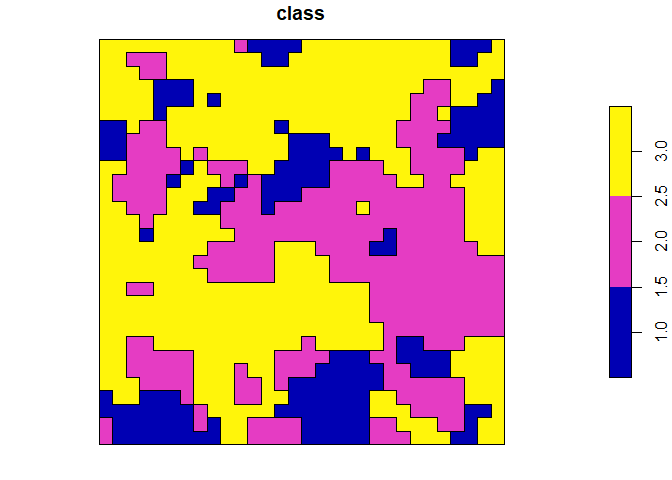
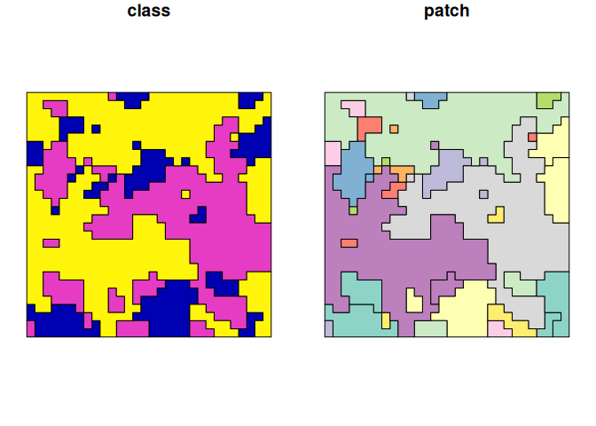

Overview
vectormetrics is an R package for calculating landscape and shape metrics for vector layers. Its aim is to provide a set of metrics that can characterize landscape patterns and properties of the shapes defined as polygons and multipolygons. Whole package is based on Simple Feature geometry standard provided by sf package. Every function can be used in a tidy, piped workflow, as it always takes the data as the first argument and returns a tibble.
Installation
You can download most recent development version of the package from GitHub with:
remotes::install_github("Nowosad/vectormetrics")Using vectormetrics
Function names structure
All functions in vectormetrics start with vm_ (for vector metrics). The second part of the name specifies the level (patch - p, class - c or landscape - l). The last part of the function name is the abbreviation of the corresponding metric (e.g. enn for the euclidean nearest-neighbor distance and rect for the rectangularity). Some landscape and class level functions have also a suffix at the end, that specifies the aggregation method (e.g. mean, sd).
# Patch level
## vm_p_"metric"
vm_p_area()
vm_p_square()
# Class level
## vm_c_"metric"[_"aggregation"]
vm_c_np()
vm_c_shape_sd()
# Landscape level
## vm_l_"metric"[_"aggregation"]
vm_l_lpi()
vm_l_square_mn()Examples
Some examples of calculating metrics on all levels and with different class and patch columns.
library(vectormetrics)
library(sf)
#> Linking to GEOS 3.12.1, GDAL 3.7.2, PROJ 9.2.1; sf_use_s2() is TRUE
data("vector_landscape")
plot(vector_landscape)
## Shape index
vm_p_shape(vector_landscape, class_col = "class")
#> MULTIPOLYGON geometry provided. You may want to cast it to separate polygons with 'get_patches()'.
#> MULTIPOLYGON geometry provided. You may want to cast it to separate polygons with 'get_patches()'.
#> MULTIPOLYGON geometry provided. You may want to cast it to separate polygons with 'get_patches()'.
#> MULTIPOLYGON geometry provided. You may want to cast it to separate polygons with 'get_patches()'.
#> # A tibble: 3 × 5
#> level class id metric value
#> <chr> <chr> <chr> <chr> <dbl>
#> 1 patch 1 1 shape 5.06
#> 2 patch 2 2 shape 4.76
#> 3 patch 3 3 shape 4.80
## Number of patches
vm_c_np(vector_landscape, class_col = "class")
#> MULTIPOLYGON geometry provided. You may want to cast it to separate polygons with 'get_patches()'.
#> # A tibble: 3 × 5
#> level class id metric value
#> <chr> <chr> <chr> <chr> <int>
#> 1 class 1 <NA> np 1
#> 2 class 2 <NA> np 1
#> 3 class 3 <NA> np 1
## Largest patch index
vm_l_lpi(vector_landscape)
#> MULTIPOLYGON geometry provided. You may want to cast it to separate polygons with 'get_patches()'.
#> # A tibble: 1 × 5
#> level class id metric value
#> <chr> <chr> <chr> <chr> <dbl>
#> 1 landscape <NA> <NA> lpi 49.7
## Mean squareness
vm_l_square_mn(vector_landscape)
#> MULTIPOLYGON geometry provided. You may want to cast it to separate polygons with 'get_patches()'.
#> MULTIPOLYGON geometry provided. You may want to cast it to separate polygons with 'get_patches()'.
#> MULTIPOLYGON geometry provided. You may want to cast it to separate polygons with 'get_patches()'.
#> # A tibble: 1 × 5
#> level class id metric value
#> <chr> <chr> <chr> <chr> <dbl>
#> 1 landscape <NA> <NA> sq_mn 0.232Utility functions
For now there are two utility functions available in the package. First one is get_patches() which breaks multipolygon geometries into polygons. There are two types of neighborhood relations available: 4 (edge) and 8 (vertex). This function enables users to create set of geometries from aggregated shapes and analyze each shape’s properties separately.
vector_patches = get_patches(vector_landscape, class_col = "class", direction = 4)
vector_patches
#> Simple feature collection with 40 features and 2 fields
#> Geometry type: POLYGON
#> Dimension: XY
#> Bounding box: xmin: 0 ymin: 0 xmax: 30 ymax: 30
#> CRS: NA
#> First 10 features:
#> class patch geometry
#> 1 1 1 POLYGON ((1 2, 0 2, 0 3, 0 ...
#> 2 1 2 POLYGON ((14 5, 15 5, 16 5,...
#> 3 1 3 POLYGON ((12 18, 12 19, 12 ...
#> 4 1 4 POLYGON ((10 19, 10 18, 9 1...
#> 5 1 5 POLYGON ((5 20, 6 20, 6 19,...
#> 6 1 6 POLYGON ((6 21, 7 21, 7 20,...
#> 7 1 7 POLYGON ((3 16, 4 16, 4 15,...
#> 8 1 8 POLYGON ((2 24, 2 23, 2 22,...
#> 9 1 9 POLYGON ((10 20, 11 20, 11 ...
#> 10 1 10 POLYGON ((13 24, 14 24, 14 ...
vector_patches |>
dplyr::mutate(patch = as.factor(patch)) |>
plot()
## Shape index
vm_p_shape(vector_patches, class_col = "class", patch_col = "patch")
#> # A tibble: 40 × 5
#> level class id metric value
#> <chr> <chr> <chr> <chr> <dbl>
#> 1 patch 1 1 shape 1.66
#> 2 patch 1 2 shape 1.37
#> 3 patch 1 3 shape 1.51
#> 4 patch 1 4 shape 1.41
#> 5 patch 1 5 shape 1.13
#> 6 patch 1 6 shape 1.13
#> 7 patch 1 7 shape 1.13
#> 8 patch 1 8 shape 1.15
#> 9 patch 1 9 shape 1.13
#> 10 patch 1 10 shape 1.13
#> # ℹ 30 more rows
## Number of patches
vm_c_np(vector_patches, class_col = "class")
#> # A tibble: 3 × 5
#> level class id metric value
#> <chr> <chr> <chr> <chr> <int>
#> 1 class 1 <NA> np 19
#> 2 class 2 <NA> np 14
#> 3 class 3 <NA> np 7
## Mean squareness
vm_l_square_mn(vector_patches)
#> # A tibble: 1 × 5
#> level class id metric value
#> <chr> <chr> <chr> <chr> <dbl>
#> 1 landscape <NA> <NA> sq_mn 0.845Another utility function is get_axes() which calculates the length of the major and minor axes of the shape. It is used to calculate the elongation metric in vm_p_elong() but since length of axes might be useful information itself, get_axes() was exported as a separate function.
get_axes(vector_patches, class_col = "class")
#> # A tibble: 40 × 6
#> level class id metric major minor
#> <chr> <chr> <chr> <chr> <dbl> <dbl>
#> 1 patch 1 1 main_axes 10.8 5.28
#> 2 patch 1 2 main_axes 9.64 7.84
#> 3 patch 1 3 main_axes 8.38 5.16
#> 4 patch 1 4 main_axes 3.6 2.22
#> 5 patch 1 5 main_axes 1.42 1.42
#> 6 patch 1 6 main_axes 1.42 1.42
#> 7 patch 1 7 main_axes 1.42 1.42
#> 8 patch 1 8 main_axes 4.24 2.82
#> 9 patch 1 9 main_axes 1.42 1.42
#> 10 patch 1 10 main_axes 1.42 1.42
#> # ℹ 30 more rows